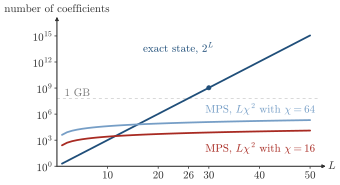
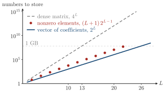

Page 3 of 12 of this session
7.3 Storing the wave function as the main bottleneck
Now that we use the language of spins, let us ask why a general interacting many-body Hamiltonian is hard to solve. Is it the diagonalization of a huge matrix, or the storage of its ground state? A first answer would be that the diagonalization is slow. We will now see that the main problem is more basic, and it is the storage of the wave function. The exact state of \(L\) spins needs \(2^L\) coefficients, while the elements of the matrix can be computed when we need them.
\[H_\text{Heis} = \sum_{\langle ij\rangle} J_{ij}\, \mathbf S_i\cdot\mathbf S_j, \qquad J_{ij} = \frac{4t_{ij}^2}{U}. \tag{6.5}\]
This is the Heisenberg model of Section 6.9, which the Hubbard model gives at half filling and large \(U\). The sum runs over the pairs of neighbors \(\langle ij\rangle\), \(\mathbf S_i\) is the spin 1/2 of site \(i\), and \(J_{ij}>0\) is antiferromagnetic. For two sites it is the dimer \(\mathbf S_0\cdot\mathbf S_1\), and for a chain the sum runs over the bonds \((i,i+1)\).
Let us take the simplest nontrivial case, which is the antiferromagnetic Heisenberg dimer of Section 6.8, \(H = \mathbf{S}_0\cdot \mathbf{S}_1\) on two spin-1/2 sites. Its ground state is the unique singlet,
\[|\Psi\rangle = \frac{1}{\sqrt{2}}\left(|{\uparrow\downarrow}\rangle - |{\downarrow\uparrow}\rangle\right), \tag{7.3}\]
which is a state that does not break any symmetry, and the expectation value of every single-site spin vanishes. As we will show below, it is also maximally entangled. The question of the whole session is how this kind of state generalizes to a macroscopic system with many sites.
Let us write a general spin-1/2 wave function in the natural product basis, with one up or down label \(s_i\) per site.
The exact state of \(L\) spins 1/2 is
\[|\Psi\rangle = \sum_{s_1,\dots,s_L} C(s_1,\dots,s_L)\, |s_1,\dots,s_L\rangle, \qquad s_i \in \{\uparrow,\downarrow\}. \tag{7.4}\]
The sum runs over the \(2^L\) configurations of the spins, so we need \(2^L\) coefficients \(C\). Their storage, and not the diagonalization of the Hamiltonian, is the obstruction.
For \(L=2\) there are four basis states, up-up, up-down, down-up and down-down, so there are four coefficients \(C\), and the Hamiltonian is a \(4\times4\) matrix. If we add one site, \(L=3\), the number doubles to eight. If we add one more site, \(L=4\), it doubles again to sixteen. In general, the dimension of the Hilbert space is \(2^L\), and this is also the number of coefficients \(C(s_1,\dots,s_L)\) that we need to write the ground state exactly. This exponential growth is the main limitation.
We may never build the full \(2^L\times2^L\) Hamiltonian matrix, and compute its matrix elements only when we need them. Still, once we have found the ground state, we have to store its \(2^L\) coefficients. This storage cost, and not the cost of the diagonalization, is the real obstruction, and it is the most important point of the whole session.
Tensor networks are one answer to this storage problem. A second answer comes from machine learning, and it is neural network quantum states, which we will study in Session 10. In this session we only develop the first answer, tensor networks, and in particular matrix product states.


The steps The count of the nonzero elements of the Heisenberg matrix
We take the open chain \(H=\sum_{i=0}^{L-2}\mathbf S_i\cdot\mathbf S_{i+1}\), with \(J=1\), and we write each bond as
\[\mathbf S_i\cdot\mathbf S_{i+1}=S^z_iS^z_{i+1}+\tfrac12\left(S^+_iS^-_{i+1}+S^-_iS^+_{i+1}\right).\]
The first term is diagonal in the basis of (7.4), with \(+\tfrac14\) for a parallel pair and \(-\tfrac14\) for an antiparallel pair. The second term flips an antiparallel pair, \(|{\uparrow\downarrow}\rangle\to|{\downarrow\uparrow}\rangle\) and back, with the element \(\tfrac12\), and it gives zero on a parallel pair.
Let us take the simplest case, \(L=2\). The four diagonal elements are \(\tfrac14\), \(-\tfrac14\), \(-\tfrac14\) and \(\tfrac14\), and the flip joins \(|{\uparrow\downarrow}\rangle\) and \(|{\downarrow\uparrow}\rangle\) with two elements \(\tfrac12\). So \(6\) of the \(16\) elements are nonzero.
For \(L\) sites a basis state with \(n_\text{p}\) parallel and \(n_\text{a}\) antiparallel bonds has the diagonal element \(\tfrac14(n_\text{p}-n_\text{a})\), with \(n_\text{p}+n_\text{a}=L-1\). For even \(L\) the number \(L-1\) is odd, so \(n_\text{p}\neq n_\text{a}\) and all the \(2^L\) diagonal elements are nonzero. Each antiparallel bond of a basis state gives one off-diagonal element. A given bond is antiparallel in half of the \(2^L\) basis states, so the \(L-1\) bonds give \((L-1)\,2^{L-1}\) off-diagonal elements. In total
\[2^L+(L-1)\,2^{L-1}=(L+1)\,2^{L-1},\]
which is \((L+1)/2\) times the \(2^L\) numbers of the vector. For odd \(L\) some states have \(n_\text{p}=n_\text{a}\), and the count is lower, \(84\) instead of \(96\) for \(L=5\).
The Heisenberg chain is realized in materials. In the copper oxide chains of SrCuO\(_2\), inelastic neutron scattering measures the magnetic excitations. They are well described by an ansatz for the two-spinon continuum of the spin-1/2 antiferromagnetic Heisenberg chain. The lower boundary of this continuum extends up to about \(360\) meV, which corresponds to the exchange constant \(J=226(12)\) meV. This is \(J/k_B\approx2600\) K, so at room temperature, \(300\) K, the thermal energy \(k_BT\) is only about \(0.11\,J\). The measurement is in this article.
The exact state of \(L\) spins 1/2 has \(2^L\) coefficients. Each one is a complex number of 16 bytes. What memory does the state of \(L=40\) spins need?
Show the answers
- A. ✓ True
This is true. The number of coefficients is \(2^{40}\approx1.1\times10^{12}\) and each one takes 16 bytes. This gives \(1.76\times10^{13}\) bytes, which is 17.6 terabytes of \(10^{12}\) bytes, or 16 in units of \(2^{40}\) bytes. This is already far above the memory of a computer, and ten more sites would multiply it by one thousand.
- B. ✗ False
This is false. The value \(2^{30}\approx10^9\) is the one for a chain of 30 sites, which does need \(1.7\times10^{10}\) bytes. For \(L=40\) the number is \(2^{40}\approx10^{12}\), a thousand times more.
- C. ✗ False
This is false. This would be the storage of a product state, one 16-byte number per site. This count keeps only what is left once the norm and the phase of each site are fixed. A matrix product state with \(\chi=1\) stores two numbers per site, so 1280 bytes for 40 sites. Already for \(L=2\) the singlet has two nonzero coefficients that cannot be written as a product of two single-site states.
The exact state of \(L\) spins 1/2 is
\[|\Psi\rangle = \sum_{s_1,\dots,s_L} C(s_1,\dots,s_L)\, |s_1,\dots,s_L\rangle, \qquad s_i \in \{\uparrow,\downarrow\}.\]
We add one site to the chain. How many coefficients \(C\) does the state of \(L+1\) sites have?
Show the answers
- A. ✗ False
This is false. It holds from \(L=2\) to \(L=3\), where 4 coefficients become 8. From \(L=3\) to \(L=4\) they go from 8 to 16, while \(2^3+4=12\). The increase is not a fixed number.
- B. ✓ True
This is true. The new spin is up or down for every configuration of the other \(L\) spins, so the number doubles. From \(L=10\) to \(L=11\) this adds 1024 coefficients. This is the exponential wall, and the MPS ansatz replaces it with a growth that is linear in \(L\).
- C. ✗ False
This is false. It holds from \(L=2\) to \(L=3\), since \(2\times4=8\). For \(L=3\) it gives \(3\times8=24\), while four sites have 16 coefficients. The factor is 2 for every \(L\), and not \(L\).
The Heisenberg chain conserves the total spin along \(z\), \(S^z_\text{tot}=\sum_iS^z_i\), so its ground state can be searched in one sector of \(S^z_\text{tot}\). Count the coefficients of the sector \(S^z_\text{tot}=0\) for \(L=4\) and for \(L=30\), and compare them with \(2^L\).
Solution
A basis state of (7.4) has \(S^z_\text{tot}=0\) when half of its spins are up. We choose the \(L/2\) sites that have an up spin, so the sector has
\[\binom{L}{L/2}\]
coefficients. For \(L=4\) this is \(6\) of \(16\), the states \(|{\uparrow\uparrow\downarrow\downarrow}\rangle\), \(|{\uparrow\downarrow\uparrow\downarrow}\rangle\), \(|{\uparrow\downarrow\downarrow\uparrow}\rangle\), \(|{\downarrow\uparrow\uparrow\downarrow}\rangle\), \(|{\downarrow\uparrow\downarrow\uparrow}\rangle\) and \(|{\downarrow\downarrow\uparrow\uparrow}\rangle\). For \(L=30\) it is \(\binom{30}{15}=1.55\times10^8\) of \(2^{30}=1.07\times10^9\), a factor \(6.9\) less.
The Stirling formula gives \(\binom{L}{L/2}\approx2^L\sqrt{2/(\pi L)}\). So the symmetry gains only a factor of order \(\sqrt L\), and the size of the sector still grows exponentially, as \(2^L/\sqrt L\). In practice exact diagonalization uses such symmetries. The factor \(6.9\approx2^{2.8}\) moves the largest chain that fits in a given memory by two or three sites, for memories from one gigabyte to one terabyte, while the wall of (7.4) stays.
Notebook check-in: session7.ipynb, “Energy of the Heisenberg model as a function of the system size” (Core)
In this exercise you compute the ground-state energy per site of the Heisenberg chain for growing system sizes, with the dmrgpy library, which is new in this session. The text of the cell speaks of exact diagonalization, but its code calls sc.gs_energy(mode="DMRG"), so it runs DMRG, the method of Section 7.10. The quiz of the cell asks for the largest chain that exact diagonalization could reach, and this limit is the \(2^L\) scaling of (7.4) in a concrete calculation.
Try it. Increase the sizes in the list Ns and plot the energy per site. For \(J=1\) it should approach the value \(1/4-\ln 2\approx-0.443\) of the infinite chain. The cell runs DMRG, so time the loop and compare how the time grows with the \(2^L\) of (7.4), which exact diagonalization would follow.
- In Section 7.5 the singlet (7.3) is our first example of an entangled state, with the entropy \(\log 2\).
- In Section 8.3 the same singlet is the ground state of the Heisenberg dimer (8.2) and the starting point of quantum spin liquids.
- In Section 10.3 the same table of \(2^L\) coefficients is replaced by a neural network that gives each coefficient on demand.